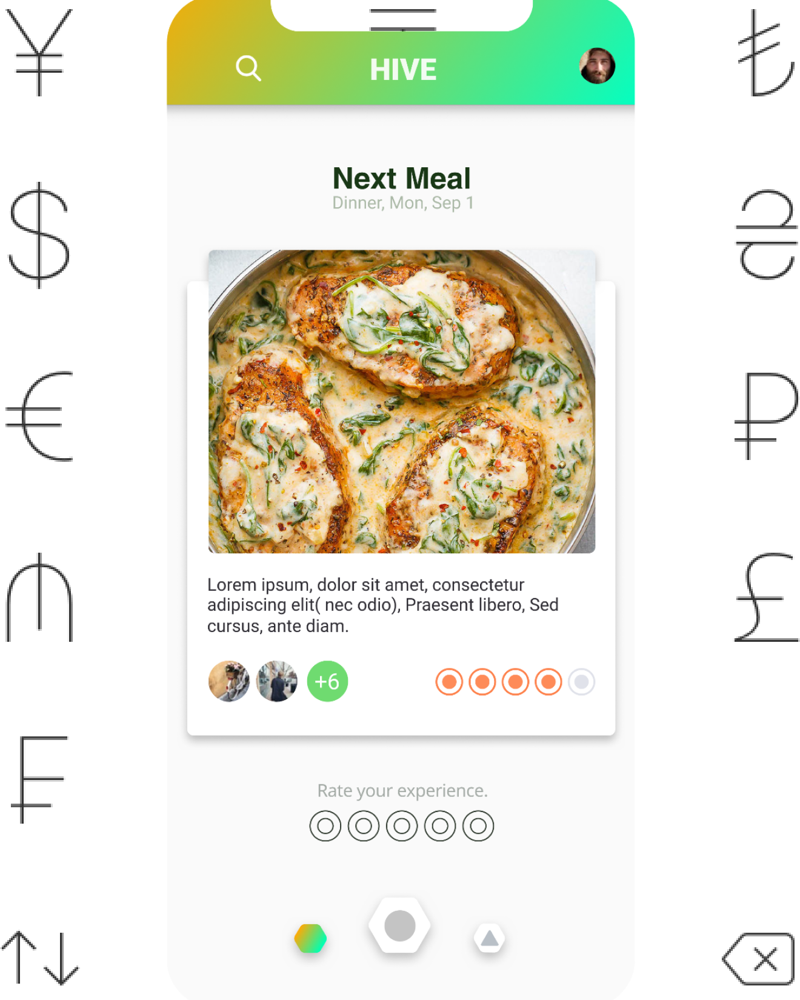
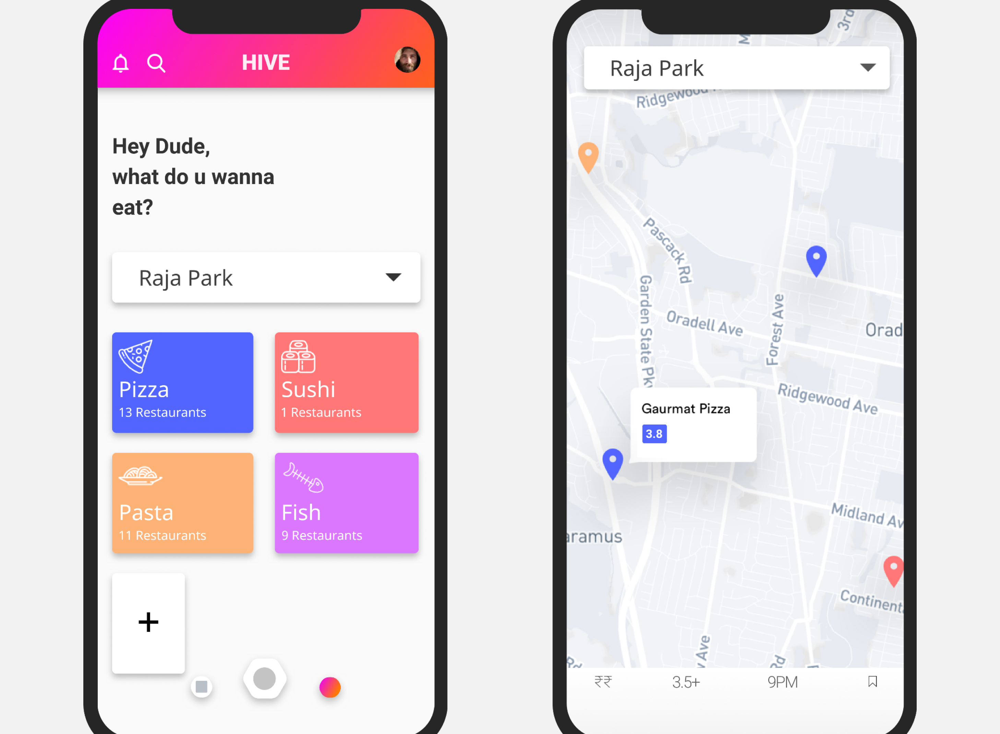
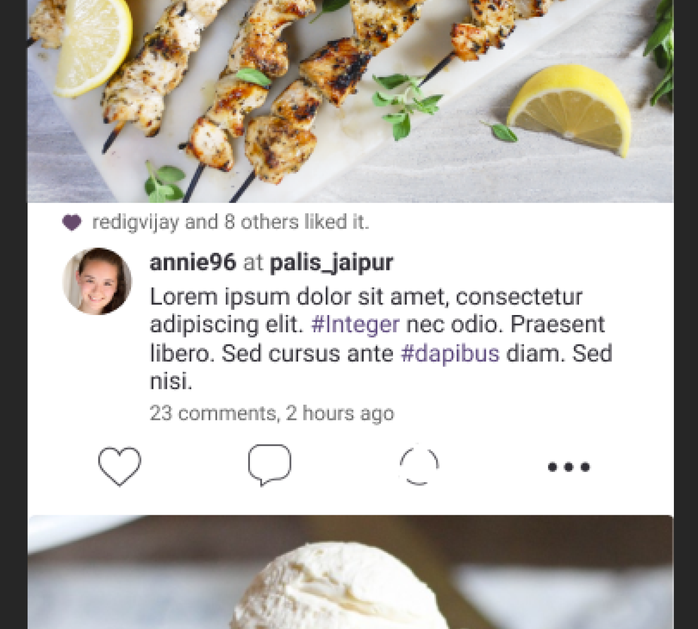
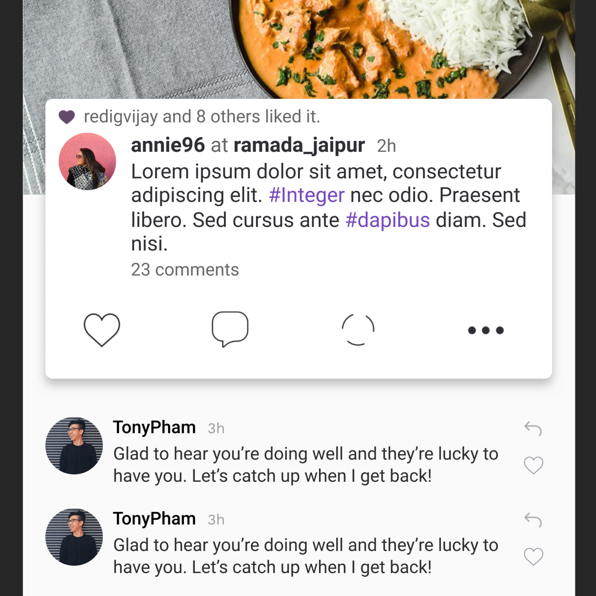
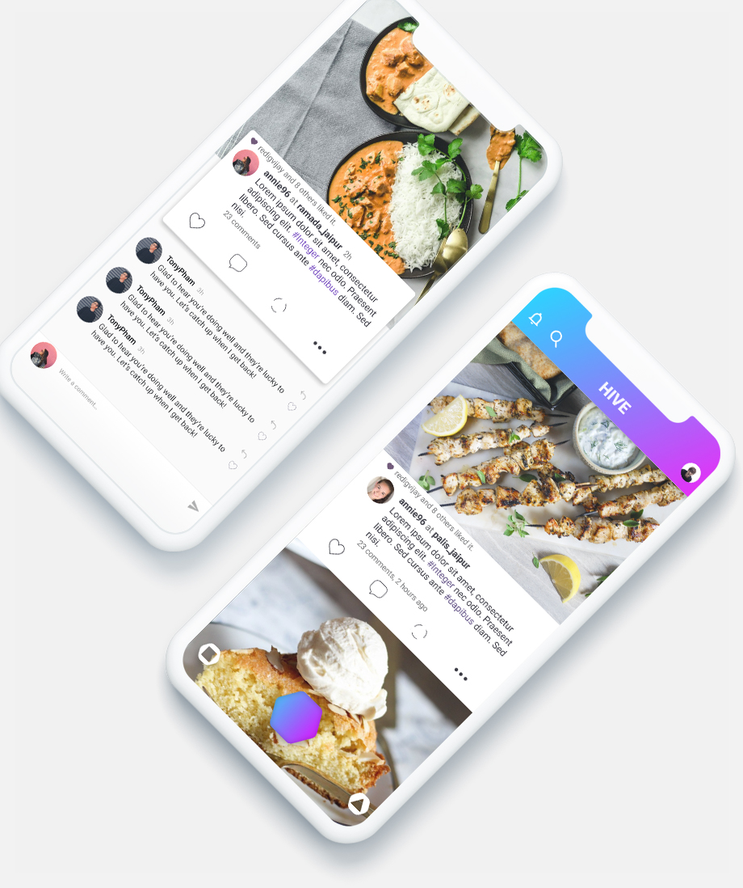
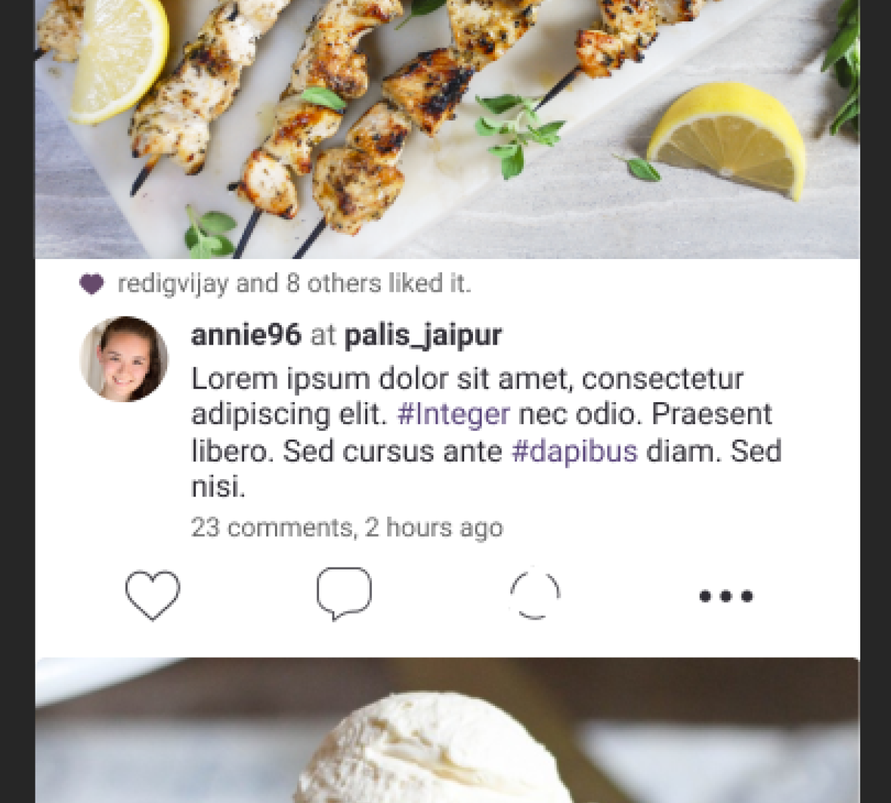
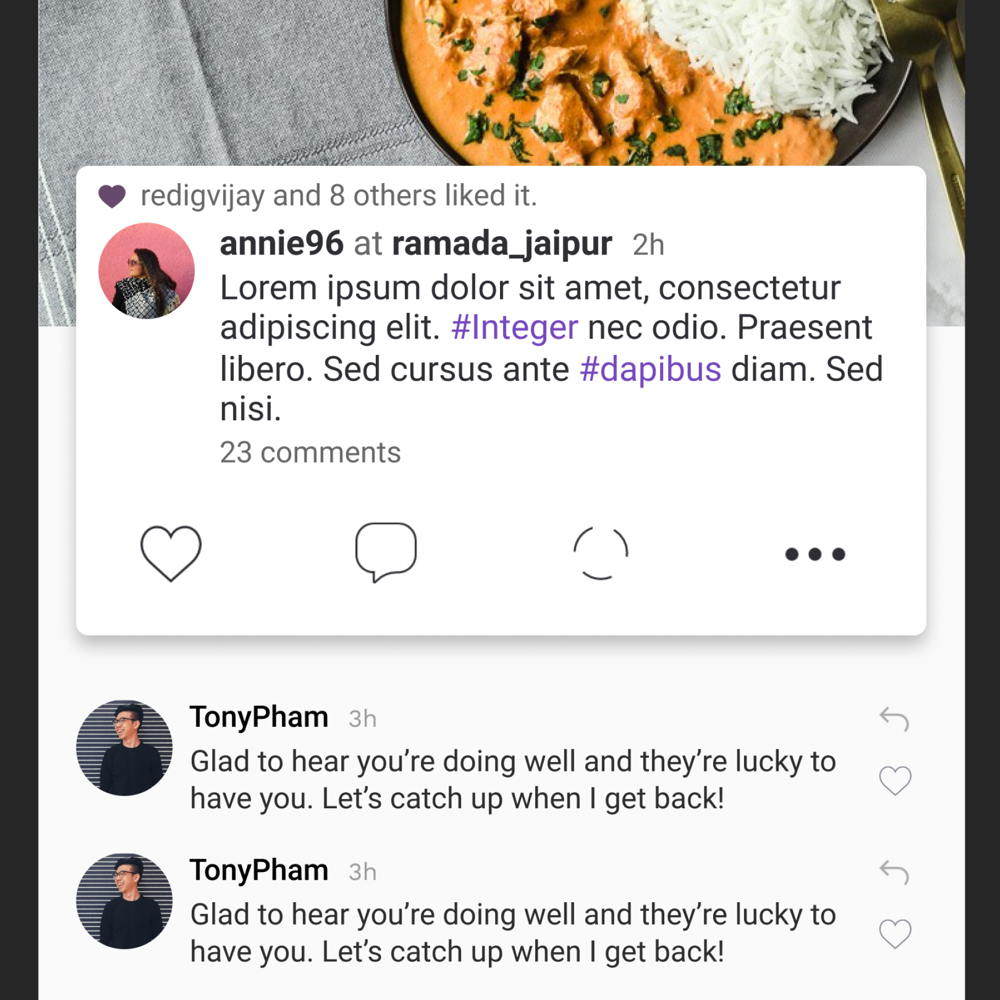
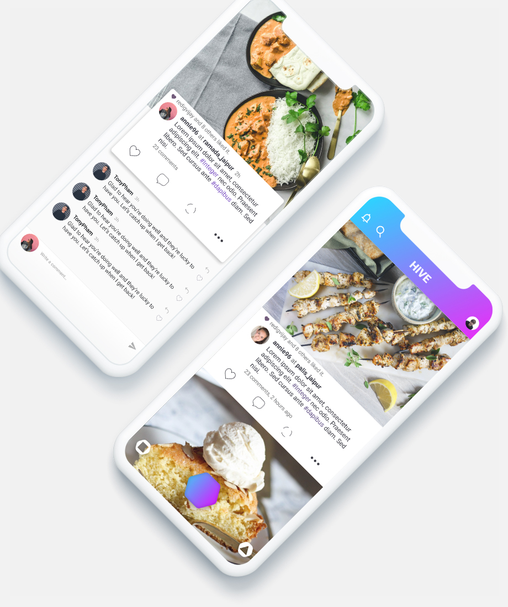
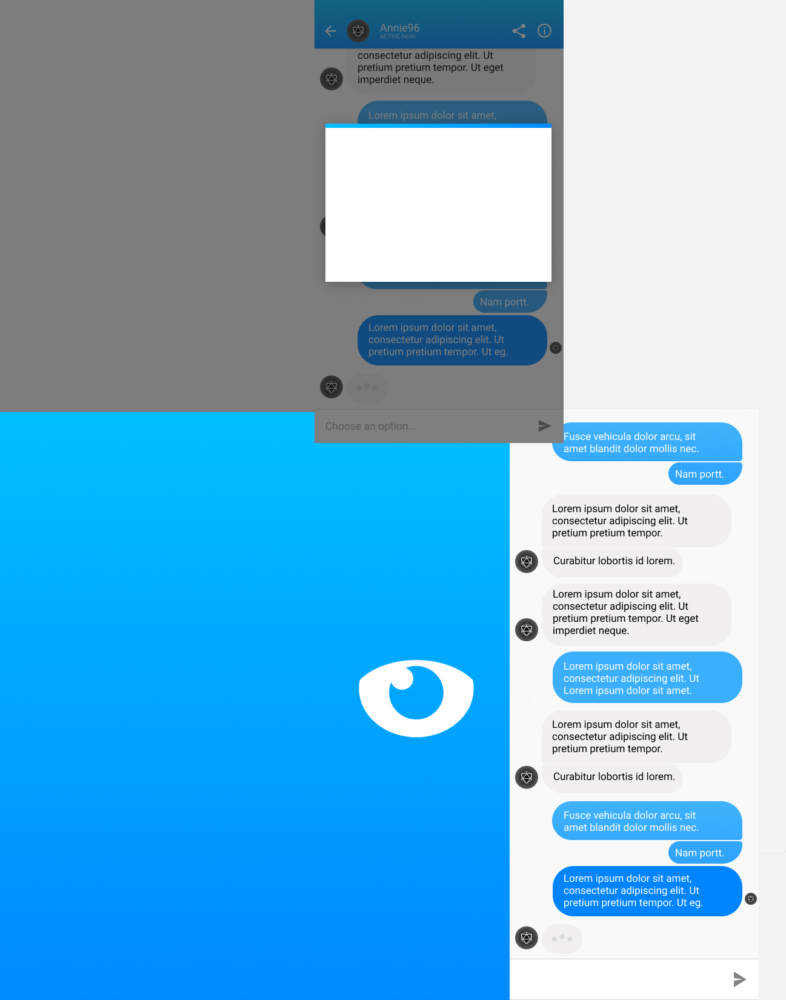
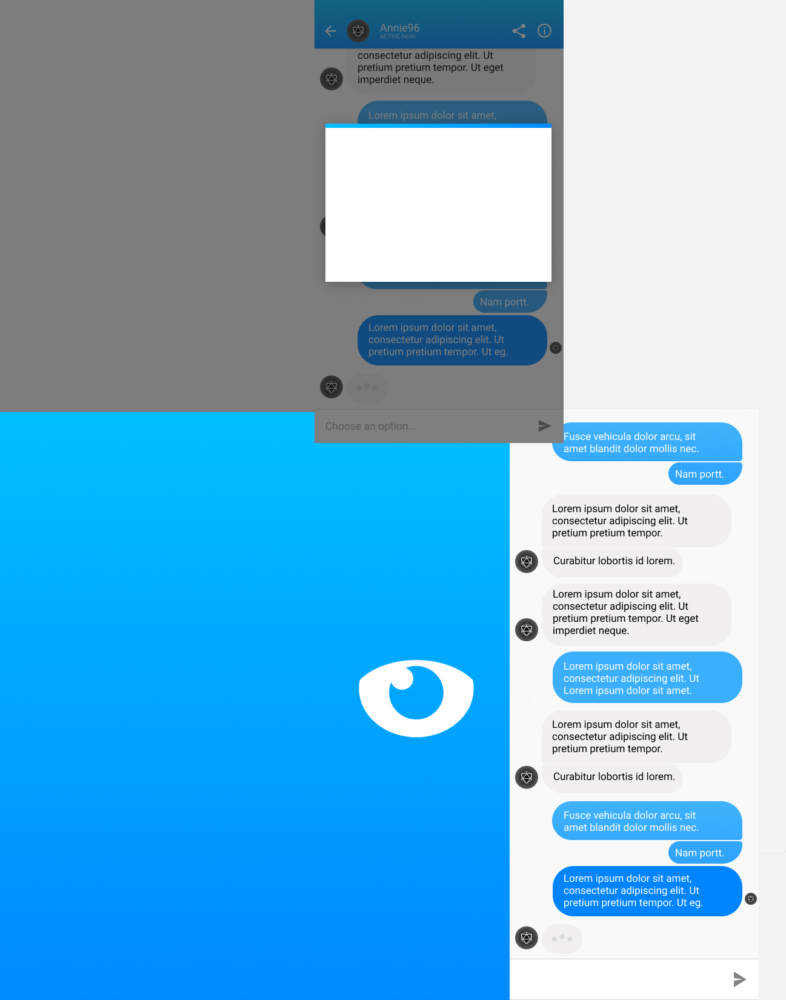

I’m Digvijay, a digital product designer. My Resume because I need work.
Project:
Hive
Role:
Product Designer & Android Developer
Date:
August 2015 to ~
Website:
All of my notes:
Description:
A self-initiated project with the goal to create a product that does one job incredibly well and learn a android development along the way. Special thanks to Kaushal Baradwaj and Lovish Jain.
Searching for a pdf and then reading those plain letter to decide whether you should go to eat in mess or not( and what about quality? ), We found that this was a stupid process. So we created foodbuzz, an app that shows you what the next meal is though a single click(It was cool then). And now after 2 years of constant user reviews and personal complains we are redesigning the app, that is HIVE and these are the things we learned about our users in 2 years.
I designed Currency to be the simplest and most intuitive currency converter in the App Store, that would look perfect on any iPhone screen.

The legacy feature from foodbuzz is redesigned and it focuses on doing one job well: stating the next meal you are going to have in the mess. Features such as switching to the next day or next meal, dislike and notifications were not necessary for this job.
One of the most unique aspects of this legacy feature is the use of context to judge the meal, that is using the rating of people who user follows as the reviewer of his own meal.
The icons are designed to fit perfectly with iOS, projecting the brand( or hexagons) into the app.

The review icons are unconventional as to give a uinique and personal touch to the user. The 'Rate your experience' feature is one click permanent option so as to bring importance and consistence in rating system.

If I dont wanna eat in mess? I am bored of it, than what? So instyead of going for the current food discovery apps which are too complex, corporate driven and unintutive use the food discovery feature where we simplified the process into 2 simple parts.
In 1st part we can decide between cusines and choose location. The result is show as a result of a map search with the just required filters in the map itself.The places listed are rated by the people who user follows.
   
  
This feature of the product is developed to retain users into the whole system. /me its a trap. This social community is based on or have the common insterest in food. The essence of a dish lies in its simulation of senses. SoVisuals are important and they should be prioritized before any other thing in the app. The context of a photo is minimized and positioned after the photo. The comment section follows the image-first rule and do not isolate the visuals context from rest of the comment section

The restaurant pages are designed to reduce and organize the the amount of information. Rating are only comnsidered from the people who user follow. Review section is prioritize in a clear and compact way.
Six months after release, Currency was downloaded over 6,000 times and has an average rating of 4.5 stars. You can download it for free on the App Store.


 
